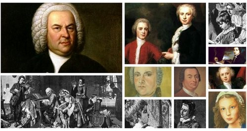
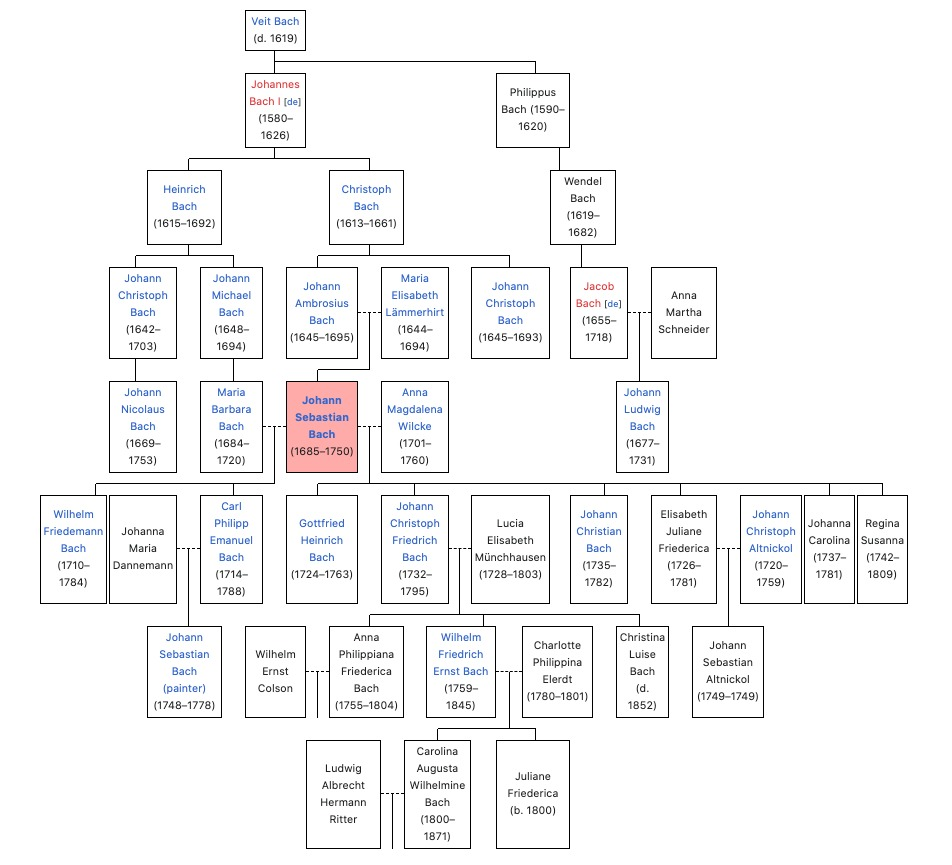
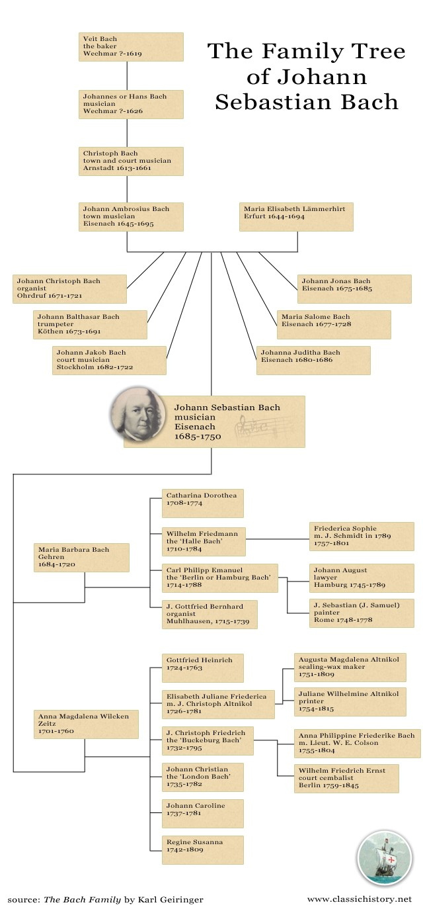

L'albero genealogico della famiglia Bach ha per titolo: Ursprung der musicalisch-Bachischen Familie ("Origine della famiglia musicale dei Bach"). Johann Sebastian Bach lo scrisse nel 1735. La famiglia di Johann Sebastian Bach aveva origine con Veit Bach che si suppone sia vissuto nel XVI secolo. Anche se il suo lavoro era quello di essere un mugnaio, era già; comunque un artista e suonava la cetra. Ci saranno poi circa sette generazioni di musicisti che deriveranno da lui. Sono state sicuramente generazioni molto prolifiche quelle di Johann Sebastian Bach e il Suo prosieguo.

I genitori: Johann Ambrosius Bach 1645-1695 e Maria Elisabeth Lämmerhirt † 1694
Suo padre, Johann Ambrosius Bach, figlio di Christoph Bach, ricopriva ad Eisenach la carica di musicista civico (Stadtpfeifer), ruolo che comportava l’organizzazione della musica a carattere profano nella città, ma anche la supervisione dell’attività musicale nella chiesa locale, inclusa la direzione del lavoro dell’organista di chiesa. È proprio dal padre che, probabilmente, Bach ricevette i primi rudimenti di violino e clavicembalo.
Johannes Bach
Johannes Bach era figlio di Hans Bach. Poco si sa della sua vita: fece sette anni di apprendistato con il musicista Christoph Hoffmann a Suhl, divenendo subito dopo musicista municipale ad Erfurt. Dal 1636 fu organista della Predigerkirche in quella stessa città.
Maria Barbara Bach Moglie
ia Barbara Bach (Gehren, 20 ottobre 1684 – 7 luglio 1720) è stata la prima moglie del compositore Johann Sebastian Bach, era anche la sua cugina di secondo grado, e figlia di Johann Michael Bach.
I figli
Catharina Dorothea Bach (1708 – 1774) fu La primogenita di Bach. La composizione non era un'opzione per le donne a quei tempi, ma Catharina eccelleva come cantante e aiutava spesso suo padre nel suo lavoro.
Johann Sebastian (J.S.) fu il figlio maggiore di Bach con la sua prima moglie, Maria Barbara. Wilhelm Friedemann Bach (1710 - 1784) fece la carriera musicale e divenne un compositore. J.S. Bach ha persino scritto a Wilhelm un corso di studi sulla tastiera, chiamato Klavierbüchlein für Wilhelm Friedemann Bach. Grazie alla sua intensa formazione musicale, Wilhelm divenne un organista e insegnò nientemeno che Johann Gottlieb Goldberg, l'uomo il cui nome è immortalato nelle grandi variazioni di Goldberg.
Carl Philipp Emanuel Bach (1714 - 1788) fu Probabilmente il più dotato di J.S. Prole di Bach, C.P.E. Bach è stato un compositore molto originale di sinfonie, tastiera e musica corale. Basandosi sull'allenamento barocco che ha imparato da ragazzo, è diventato uno dei principali giocatori più chiari in Europa (dopo aver studiato per una laurea in giurisprudenza). Il suo saggio sulla vera arte della tastiera è diventato il principale insegnante di tastiera dell'epoca. Ha formato un ponte musicale tra le epoche barocche e classiche.
C.P.E. La posizione di Bach come musicista di corte di Federico il Grande includeva anche il compito di fornire accompagnamento sulla tastiera per gli assoli di flauto del re. Federico si credeva un flautista molto migliore di lui e spesso si prendeva le libertà con il tempo.
Johann Gottfried Bernhard Bach (1715 - 1739)
Johann Gottfried nacque l'11 maggio 1715 e, come nel caso dei suoi fratelli, divenne musicista professionista. A differenza di loro, tuttavia, non ha avuto l'opportunità di andare all'università e ha segretamente abbandonato la sua carriera musicale per studiare legge. Morì all’età di 24 anni. Dopo la morte della moglie Maria Bach, Johanne sposò Anna Magdalena Wilcke. La loro prima figlia nacque nel 1723, lo stesso anno in cui Bach firmò un contratto per diventare Thomaskantor a Lipsia, ma morì tre anni dopo.
Di questi quattro giovani Bach, cioè Regina Johanna Bach (1728 - 1733), Christiana Benedicta Louise (1730 - 1730) e Christiana Dorothea Bach (1731 - 1732) si sa molto poco, sono morti durante l'infanzia
Anna Magdalena Wilcken Moglie
Anna Magdalena Wilcke è nata a Zeitz, nell'elettorato della Sassonia. Mentre si sa poco della sua prima educazione musicale, la famiglia era musicale. Suo padre, Johann Caspar Wilcke (1660-1733 ca.), suonava la tromba, e aveva una carriera nei tribunali di Zeitz e Weißenfels. Sua madre, Margaretha Elisabeth Liebe, era la figlia di un organista.
Nel 1721 Anna Magdalena fu impiegata come cantante presso la corte principesca di Anhalt-Cöthen. Johann Sebastian Bach lavorava lì come Capellmeister, o direttore della musica, dal dicembre 1717. È possibile che l'abbia sentita cantare per la prima volta alla corte ducale di Weißenfels, dove è noto che si era esibito già nel 1713, quando la sua caccia La Cantata è stata presentata in anteprima lì.
FIGLI: NON SI CAPISCE DI CHI!!!
Gottfried Heinrich Bach (1724 - 1763)
Si pensa che Gottfried fosse in qualche modo leggermente handicappato mentale, i cui segni sono stati rilevati sin dall’ età. Fortunatamente aveva molti fratelli di supporto
Elisabeth Juliana Friederica (1726 - 1781)
Il 1726 segna un anno di gioia e tragedia per la famiglia Bach: appena due mesi dopo la nascita di Elisabetta, sua sorella maggiore Christiana morì all'età di tre anni. Elisabeth, tuttavia, è sopravvissuta all'età adulta e ha sposato uno degli allievi di suo padre, l'organista tedesco Johann Christoph Altnikol.Ernestus Andreas Bach (Born and died in 172)
Johann Christoph Friedrich Bach (1732 - 1795)
Dopo un periodo di tragedia, nacque il nono figlio di Bach: il nome confuso di Johann Christoph Bach, da non confondere con il cugino di Bach una volta rimosso, lo zio di Bach e il fratello maggiore di Bach ... anche tutti chiamati Johann Christoph. Meno confusamente, viene spesso chiamato "Bückeburg Bach", dal nome di una città della Bassa Sassonia dove suonava il clavicembalo in modo professionale. Come tanti fratelli Bach prima di lui, era un prodigioso compositore classico, che scrisse pezzi fortemente influenzati dalla moda per la musica italiana. Ha anche visitato Londra e ha pubblicato alcune opere, ma oggi sopravvive poco della sua musica.
Il figlio maggiore, Wilhelm Friedrich Ernst Bach (1759-1845) fu l'unico nipote di J.S. Bach ottiene fama come compositore. Era direttore musicale di Federico Guglielmo II di Prussia.
Johann Christian Bach (1735 - 1782)
Conosciuto come "English Bach", J.C. Bach viaggiò in Italia e si convertì al cattolicesimo romano, prima di stabilirsi a Londra al servizio della regina Charlotte, da cui il suo soprannome "The London Bach". Divenne un noto compositore classico e un'influenza sui concerti di Mozart. J.C. componeva cantate, opere orchestrali, musica per tastiera, opere e sinfonie, che suonavano in modo molto diverso dalle opere barocche di suo padre. J.S. Bach aveva già 50 anni quando nacque J.C., e gli stili musicali dell'epoca stavano diventando sempre più "classici".
Johanna Carolina Bach (1737 - 1781)
Regina Susanna Bach (1742 - 1809)
I bambini del XIX e XX di Bach, entrambe le figlie, sopravvissero bene fino all'età adulta, anche se nessuna delle due si sposò mai. Mentre poco si sa di Johanna, Regina conosceva Beethoven; chiese persino che i proventi della premiere della sua Sinfonia n. 3 le fossero donati. Nonostante le collezioni siano state realizzate in onore del suo famoso padre, è morta in povertà.

Wilhelm Friedemann Bach(Weimar, 22 novembre 1710 – Berlino, 1º luglio 1784) è stato un compositore e organista tedesco, figlio primogenito di Johann Sebastian Bach.
Carl Philiph Emanuel Bach
(Weimar, 8 marzo 1714 – Amburgo, 14 dicembre 1788) è stato un compositore, organista e clavicembalista tedesco, era il secondo e più famoso dei venti figli del celebre compositore Johann Sebastian Bach.
Johann Christian Bach(Lipsia, 5 settembre 1735 – Londra, 1º gennaio 1782) è stato un compositore tedesco.Tra i maggiori compositori della sua epoca, compose prevalentemente musica in stile galante, pur inserendosi tra il novero dei principali precursori del classicismo viennese.
Torna all'inizio